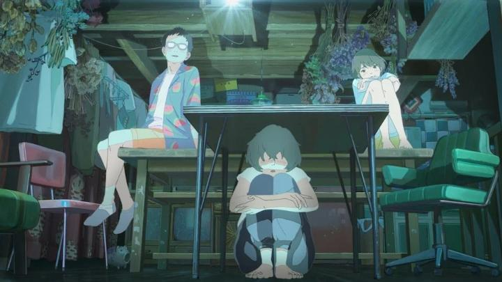
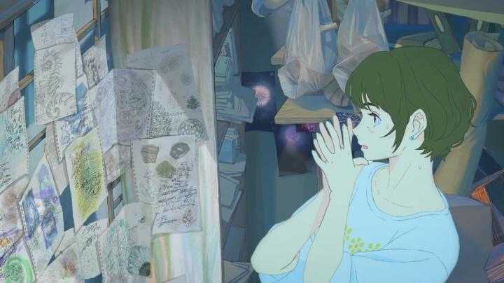

Of all the films on my docket for Fantasia Film Festival 2026, the anime film "A New Dawn" was... one of the least interesting. The title is as generic as could be, and the synopsis felt all to similar and empty. The film did surprise me in the end though... not for the story, but I think because of the directing and writing style. Japan has some massive city hubs (think Tokyo or Kyoto), but also has countless smaller towns that are slowly dying out as the young generation moves away for opportunity. Some villages are practically abandoned, their homes a standing relic of decades past. That's at the core of "A New Dawn." The starting scene is of three teenagers overhearing a meeting between adults over the fate of the doomed local fireworks factory, a family-run business at the end of its rope. The three include a girl (Kaoru), a boy (Sentaro) and Sentaro's younger brother, Keitaro. Curiously, Keitaro is one of the most direct representations of what I assume is autism or something similar; he climbs and jumps around the house like a monkey, doesn't talk much, and his instinct is to fight (physically) when he disagrees. After that fateful day, the film cuts to a few years later; Kaoru and Sentaro are adults separately getting by with their real-world jobs. Sentaro appears for the first time in years to ask for Kaoru's help to organize a visual art performance back in the tiny home town they escaped from... where Keitaro remained, a recluse in the old fireworks house, with a formal demolition scheduled in just a few days. The real ask is to have Kaoru help get Keitaro to leave the house, but instead she gets wrapped up in Keitaro's last big bet: to launch the legendary firework "Shuhari," a craft invented by his deceased mother, and for its beauty to inspire the town to keep the factory. Yes, this sounds a bit like the typical "teeangers rebelling against the adults in business suits to save the house they grew up in" (or whatever the name for this genre is). But it feels unique in that the kids are adults, albiet still figuring out what that really means. That sense of nostalgia for the old, and that things inevitably change, is portrayed in a more real way that adults have experienced, not the naive version kids think they have. And that the factory will be saved is never a forgone conclusion - in fact, the emerging theme is that it too will die eventually, and that the best the characters can do is choose "how" it goes out, rather than prolonging "when." It's a strangely mature narrative compared to most anime, something animed at audiences aged 24 rather than 14.

"A New Dawn" is a very grounded narrative, so much so that I think it might have been better suited for live-action rather than animation (and I NEVER say live-action would be better). The director does find ways to make the animation sparkle here and there; like the opening scene that looks made of coloured pencil, or the climatic fireworks scene in which fireworks have never looked so good in animation, while still looking real and not exaggerated for effect. There's also an out-of-nowhere stop-motion / live-action sequence in the middle. in these pique, experimental scenes, it's gorgeous. For the rest, colours and designs are soft, and the grounded realism almost makes the characters not stand out in a memorable way, to a slight detriment. I can't quite place how to describe the visual design... it's not all just coloured pencil or paint throughout... perhaps you've seen keyframe animation sheets for anime, where colours are added primarily for function of indicating distinct regions? The film kinda looks like that, or just slightly more developed than that. It's not quite fully developed to have an identity, but it's pleasing in a pure sort of way. And that's kind of how the writing is too. Because it's so grounded, the characters feel more real, but also less memorable or developed. The pacing and mood of the film is a bit off too. I can't decide if these are features of an unusually gifted and unique director voice, or of a director who's just better suited not working in animation at all. Whether or not the film is "great," it's these factors that at least make it somewhat distinct, elevating it just slightly from a drama between young adults, where most of the content is just about them arguing and reminiscing. Even if I can't pinpoint why, I think I'd still recommend "A New Dawn" as a sort-of dark horse, a more grounded, off-the-travelled path story that adults could really appreciate. Kind of like the features of those old dying towns, I suppose... it's not exciting, but there's something unique you can only find there, and it'd be a shame not to experience it. - "Ani" More reviews can be found at : https://2danicritic.github.io/ Previous review: review_A_Magnificent_Life Next review: review_A_Scanner_Darkly